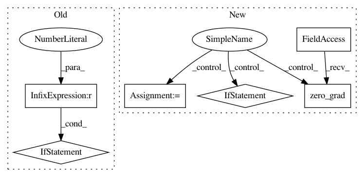

a233fceb859593143dbc29226f483f29253976ae,fairseq/multiprocessing_trainer.py,MultiprocessingTrainer,_async_backward_and_opt,#MultiprocessingTrainer#Any#Any#Any#,197
Before Change
nccl.all_reduce(flat_grads)
// normalize grads
if grad_denom != 0:
flat_grads.div_(grad_denom)
// clip grads
grad_norm = self._clip_grads_(flat_grads, self.args.clip_norm)
// copy reduced grads back
self._set_model_grads_(flat_grads)
After Change
except RuntimeError as e:
if "out of memory" in str(e):
print("| WARNING: ran out of memory on GPU //{}, skipping batch".format(device_id))
oom = True
if hasattr(torch.cuda, "empty_cache"):
torch.cuda.empty_cache()
self.optimizer.zero_grad()
else:
raise e
// all-reduce grads and rescale by grad_denom
In pattern: SUPERPATTERN
Frequency: 3
Non-data size: 6
Instances
Project Name: pytorch/fairseq
Commit Name: a233fceb859593143dbc29226f483f29253976ae
Time: 2017-12-06
Author: myleott@fb.com
File Name: fairseq/multiprocessing_trainer.py
Class Name: MultiprocessingTrainer
Method Name: _async_backward_and_opt
Project Name: rusty1s/pytorch_geometric
Commit Name: 3bba9a4f2dc3cecc76b105f9601a49e543f249e1
Time: 2019-03-17
Author: matthias.fey@tu-dortmund.de
File Name: examples/data_parallel.py
Class Name:
Method Name: